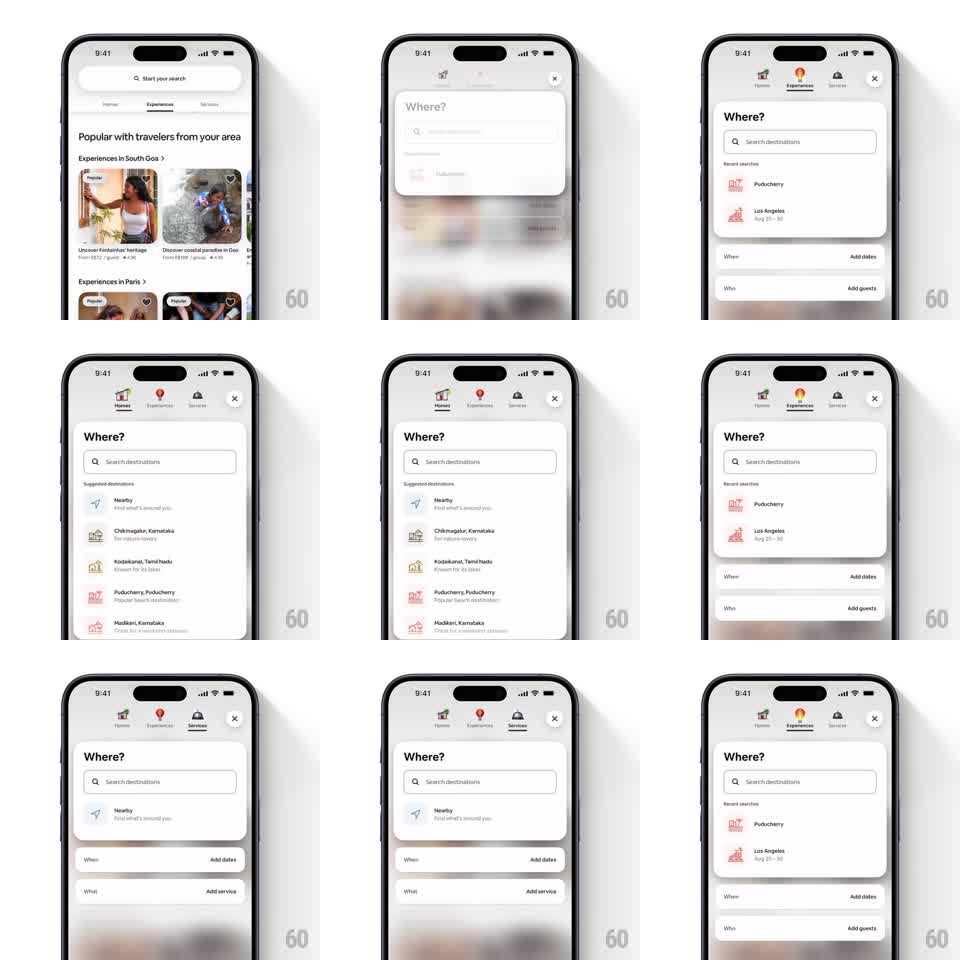

Media
Frame-by-frame

Rebuild this interaction 1:1: Airbnb's search overlay - tapping the search pill expands a full search sheet where the Homes / Experiences / Services tabs switch with springy 3D icons, the "Where?" input morphs between collapsed and expanded states, and recent searches plus When / Who cards adapt per tab.

Rebuild this interaction 1:1: Airbnb's search overlay - tapping the search pill expands a full search sheet where the Homes / Experiences / Services tabs switch with springy 3D icons, the "Where?" input morphs between collapsed and expanded states, and recent searches plus When / Who cards adapt per tab. ## Integration Integration: stack-agnostic spec - springs given as stiffness/damping, timed motions as duration + curve; map every value to your framework and animation library of choice. ## Scene Home feed with a "Start your search" pill. Search overlay: tab strip with 3D icons (Homes house, Experiences balloon, Services bell) and a close X; a large "Where?" card with a "Search destinations" input; "Recent searches" rows (Puducherry, Los Angeles); collapsed "When / Add dates" and "Who / Add guests" (or "What / Add service" on Services) cards below. ## Motion spec Pattern: expanding search overlay with springy tab switch and morphing field cards. - Tap the pill: it morphs into the overlay - the pill's bounds grow to the full sheet (300ms ease-in-out) while the feed dims and blurs behind. - Tab strip drops in from the top (spring ~280/18, 60ms stagger per tab); the active tab's icon is raised and tinted, the inactive ones recede. - Tab switch: the outgoing icon settles down and grays (200ms) as the incoming icon pops up (scale 1 -> 1.15 -> 1, spring ~320/16); the cards below crossfade to the tab's variant (250ms) - Services swaps "Who / Add guests" for "What / Add service". - "Where?" card expands when focused (height grows, spring ~300/20) revealing recent searches; collapses back (250ms) when another card is tapped. - The When and Who cards lift with the same spring when expanded, pushing siblings down. ## Calibration - The pill-to-sheet morph is seamless - the input text stays pinned through the expansion. - Only one card is expanded at a time; expanding one collapses the other. ## Reduced motion Overlay fades in; tab switch and card expansion crossfade (200ms). ## Don't miss - The 3D tab icons match the tab-bar set - same assets, same lighting. - Recent searches carry small 3D destination thumbnails, not flat icons.